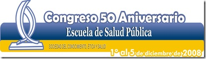

Hacia el 2008: “Conmemoración del Cincuentenario de la Autonomía Universitaria”
Sede Escuela de Salud Pública: Complejo Hospitalario “José Ignacio Baldó” El algodonal, Antímano
Tef. Fax. Dirección 0212.4437236/Serv. de admón. 0212.443.8034/Dpto.admón. Tef. 0212.4725410.
última actualización: 07 de Octubre de 2008